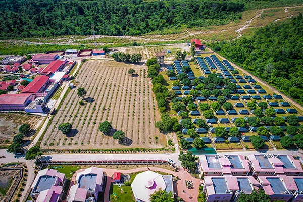
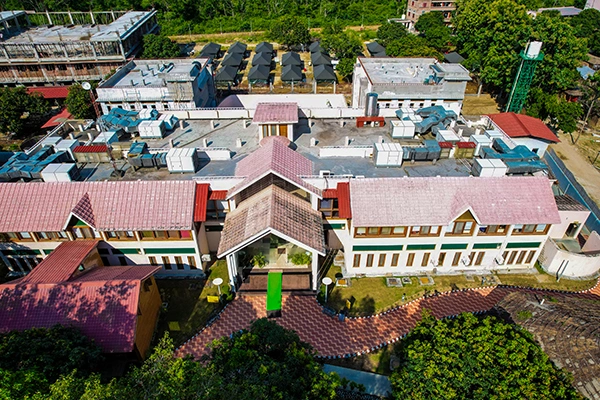
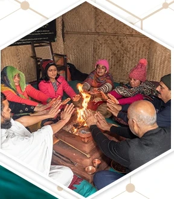
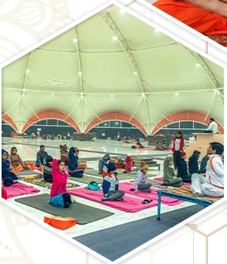

Gallery
A glimpse of the campus
Tap any photo to view it full size.

A wellness village where the wisdom of the rishis meets modern medical supervision.
Yog Gram is a residential healing centre and a unit of Patanjali Yogpeeth, located at Village Aurangabad near SIDCUL, Roshnabad in Haridwar.
Inspired by the principles of Swami Ramdev Ji and Acharya Balkrishna Ji, Yog Gram integrates Yoga, Ayurveda, Naturopathy and Panchakarma into one complete system of care. Our doctors design personalised treatment plans for lifestyle concerns and chronic conditions, while our natural surroundings, sattvic diet and daily yoga help every health seeker rediscover balance.
More than a hospital, Yog Gram is a way of living — early mornings, mindful meals, fresh air and a community united by the pursuit of good health.


To offer authentic, affordable, drug‑free healing by combining traditional Indian sciences with careful medical supervision and research.
Personalised care, pure sattvic food, a clean and peaceful environment, and transparent, ethical practice for every health seeker.
Four categories of clean, comfortable cottages set in green surroundings.
Ayurvedic and naturopathy doctors who supervise your plan daily.
A grand, airy hall for group yoga, pranayama and meditation.
Medically guided meals prepared fresh to support your treatment.
Dedicated Panchakarma, naturopathy and physiotherapy units.
Walking paths, orchards, a serene lake and Shivalik views.
Evening havan and spiritual gatherings for inner peace.
Register, request and book your stay from anywhere.
A gentle, disciplined rhythm aligned with nature. Exact timings are shared on arrival and may vary by season and individual plan.

Rise before sunrise, warm water and Shatkarma practices as advised.
Group yoga session in the yoga hall — mandatory for all health seekers.
Fresh juices, herbal decoctions and a light sattvic breakfast.
Doctor's round followed by your prescribed Panchakarma or naturopathy therapies.
A balanced, doctor‑guided meal followed by rest.
Further therapies, health talks and lifestyle guidance.
Evening yoga, havan and spiritual discourse.
A light dinner and early to bed for deep, restorative sleep.
Tap any photo to view it full size.